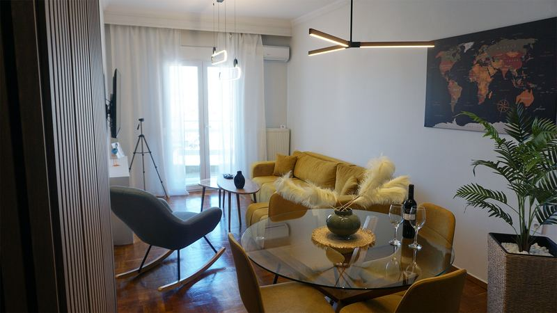
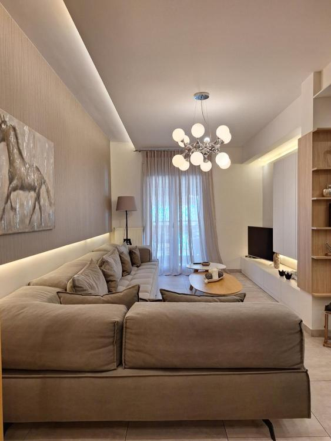
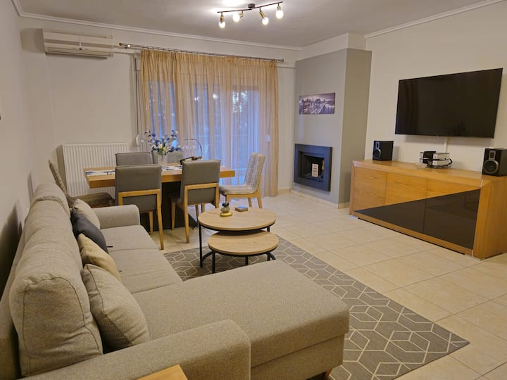
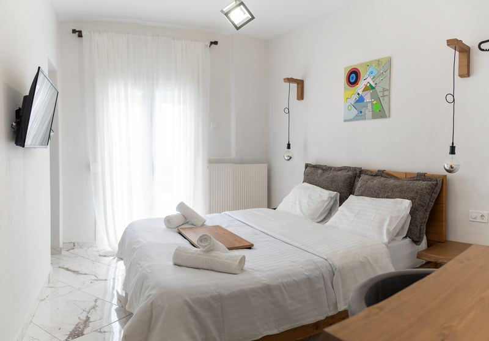
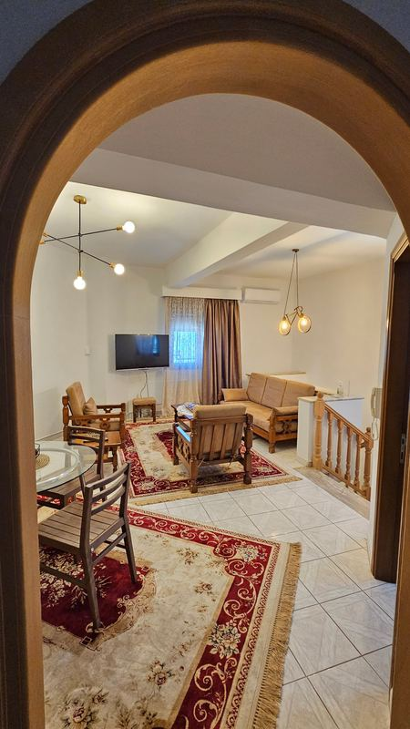

Panoramic View Apartment
Θεσσαλονίκη, δίπλα στη ΔΕΘ. Πανοραμική θέα σε όλη την πόλη.
έως 6 άτομα · 2 υπνοδωμάτια · 2 κρεβάτια · 1 καναπές-κρεβάτι · 1 μπάνιο · 60 τ.μ.

Διαλέξτε κατάλυμα και κλείστε στο Booking.com ή στο Airbnb, ή μιλήστε απευθείας μαζί μας στο τηλέφωνο ή με email.
Διαμερίσματα στην πόλη, κοντά στη θάλασσα και στο κέντρο.
Θεσσαλονίκη, δίπλα στη ΔΕΘ. Πανοραμική θέα σε όλη την πόλη.
έως 6 άτομα · 2 υπνοδωμάτια · 2 κρεβάτια · 1 καναπές-κρεβάτι · 1 μπάνιο · 60 τ.μ.

Βασιλίσσης Όλγας, Θεσσαλονίκη. Μοντέρνο διαμέρισμα 78 τ.μ. στη Βασιλίσσης Όλγας, κοντά στη θάλασσα.
έως 6 άτομα · 2 υπνοδωμάτια · 2 κρεβάτια · 1 μπάνιο · 78 τ.μ.

Πυλαία, Θεσσαλονίκη. Ευρύχωρο σπίτι 87 τ.μ. σε ήσυχη γειτονιά, με δωρεάν πάρκινγκ.
έως 5 άτομα · 2 υπνοδωμάτια · 2 κρεβάτια · 1 μπάνιο · 87 τ.μ.

Ήσυχη διαμονή στη Δυτική Μακεδονία, ανάμεσα σε αρχοντικά και αμπέλια.
Σιάτιστα, Κοζάνη. Δύο υπνοδωμάτια και μεγάλη ιδιωτική βεράντα.
έως 6 άτομα · 2 υπνοδωμάτια · 2 κρεβάτια · 1 καναπές-κρεβάτι · 1 μπάνιο · 60 τ.μ.

Σιάτιστα, Κοζάνη. Ευρύχωρο σπίτι 110 τ.μ., δίπλα στην πλατεία.
έως 8 άτομα · 3 υπνοδωμάτια · 4 κρεβάτια · 2 καναπέδες-κρεβάτια · 1 μπάνιο · 110 τ.μ.
